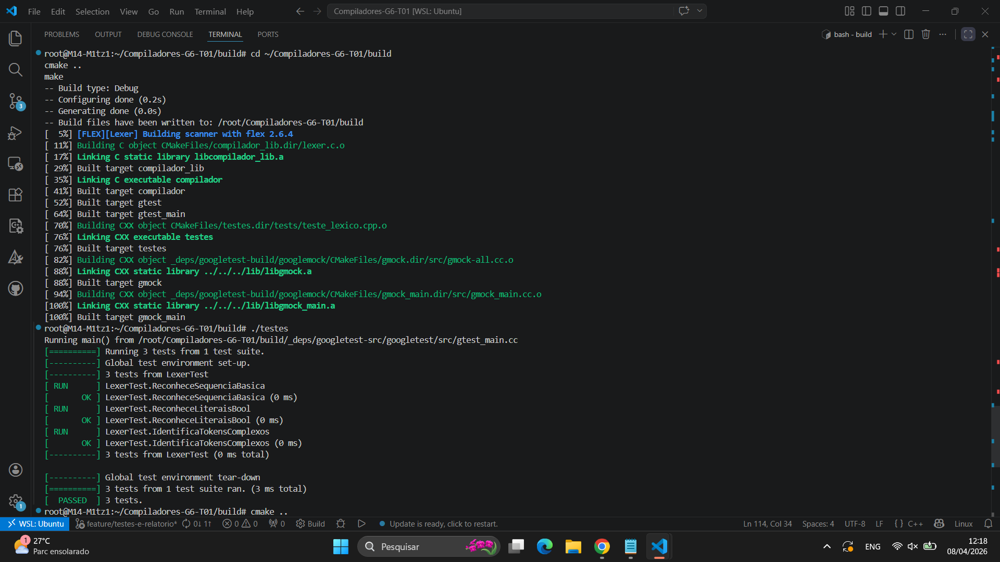
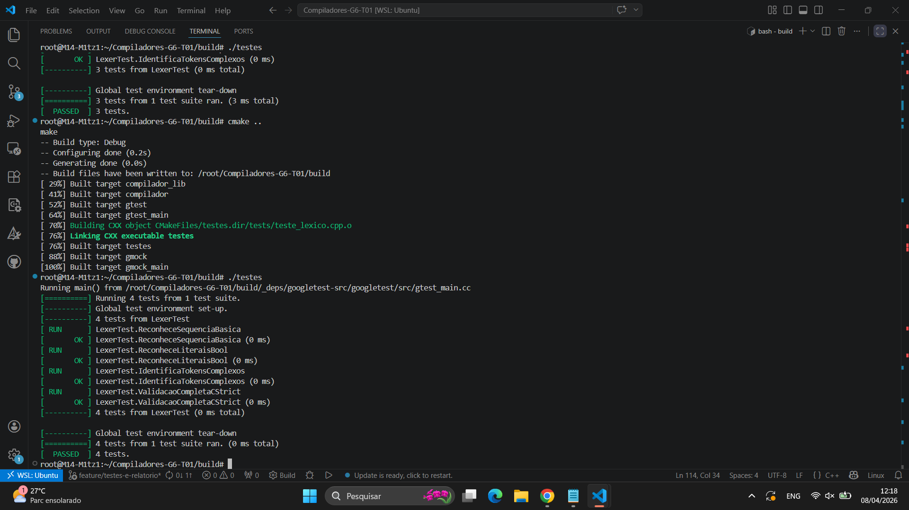
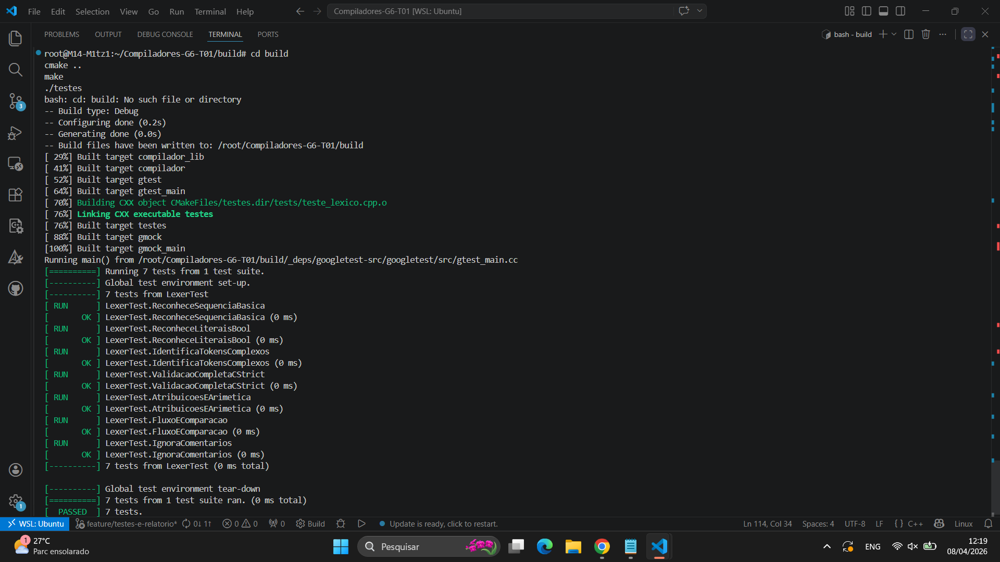

Relatório Técnico de Desenvolvimento e Testes - Grupo 06
Projeto: Compilador C-- Strict (Versão Simplificada)
Ambiente: Linux (WSL Ubuntu)
Data: 08 de Abril de 2026
1. Introdução e Objetivos
Este documento especifica a lógica de programação, os fundamentos teóricos e a validação prática da linguagem C-- Strict. O projeto visa a implementação de um compilador capaz de traduzir um subconjunto da linguagem C para código de máquina Assembly x86-64.
Objetivos Centrais:
- Implementação Direta: Sintaxe desenhada para tradução direta em assembly.
- Minimalismo: Ausência intencional de ponteiros e alocação dinâmica (Heap).
- Determinismo: Toda a gerência de dados é delegada exclusivamente à Pilha (Stack), garantindo previsibilidade semântica e evitando vazamentos de memória.
2. Descrição das Ferramentas e Tecnologias
O desenvolvimento utiliza um conjunto clássico de ferramentas de automação: * Flex (Fast Lexical Analyzer Generator): Responsável pela Análise Léxica e identificação de tokens. * Bison (GNU Parser Generator): Responsável pela Análise Sintática via gramática BNF e geração do cabeçalho de tokens. * C++: Linguagem base para a lógica do backend e infraestrutura de testes. * Google Test (GTest): Framework utilizado para garantir a integridade de cada fase do compilador. * CMake/Make: Automação do processo de compilação e gerenciamento de dependências.
3. Fundamentação Teórica: Gramática e Lógica
A linguagem adota o paradigma imperativo estruturado. O fluxo lógico é construído de forma hierárquica (Sequência, Seleção e Iteração).
Gramática Livre de Contexto (CFG)
A definição formal segue o quádruplo \(G = \langle V, \Sigma, P, S \rangle\), onde:
* Terminais (\(\Sigma\)): Tokens como INT, IF, INC (++), PLUSEQ (+=), etc.
* Não-Terminais (\(V\)): Estruturas abstratas como <programa>, <declaração> e <expressão>.
O comportamento do compilador foi ajustado para suportar Shadowing (sobrescrita de escopo) e Tipagem Estática. O uso de tokens específicos permite que o parser entenda operações complexas sem ambiguidade, tratando o incremento como uma operação atômica.
4. Metodologia de Teste de Unidade
Para validar o sistema, foram criadas baterias de testes focadas no Analisador Léxico. O maior desafio técnico foi a sincronização: o Lexer (Flex) precisa importar as definições do Bison para que os nomes dos tokens (INC, ASSIGN) sejam consistentes em todo o projeto.
Códigos de Teste Utilizados (Exemplos):
// Validação de Sequência, Operadores e Booleanos
TEST(LexerTest, ValidacaoCompletaCStrict) {
auto buffer = yy_scan_string("int x = 10; x++; x += 5; true;");
// Testa Declaração e Atribuição de Valor (yylval.intval)
EXPECT_EQ(yylex(), INT);
EXPECT_EQ(yylex(), IDENTIFIER);
EXPECT_EQ(yylex(), ASSIGN);
EXPECT_EQ(yylval.intval, 10);
// Testa Incremento e Atribuição Composta (Tokens INC e PLUSEQ)
EXPECT_EQ(yylex(), SEMICOLON);
EXPECT_EQ(yylex(), IDENTIFIER);
EXPECT_EQ(yylex(), INC);
EXPECT_EQ(yylex(), SEMICOLON);
// Testa Literais Booleanos
EXPECT_EQ(yylex(), BOOL_LITERAL);
EXPECT_EQ(yylval.intval, 1); // True mapeado para 1 internamente
yy_delete_buffer(buffer);
yylex_destroy();
}
// Validação de Comentários e Espaços (Devem ser ignorados pelo Lexer)
TEST(LexerTest, IgnoraComentarios) {
auto buffer = yy_scan_string("int x; // comentario\n x = 5; /* bloco */");
EXPECT_EQ(yylex(), INT);
EXPECT_EQ(yylex(), IDENTIFIER);
EXPECT_EQ(yylex(), SEMICOLON);
// O Lexer deve saltar o comentário e identificar o próximo identificador 'x'
EXPECT_EQ(yylex(), IDENTIFIER);
}
5. Resultados e Comportamento do Sistema
O sistema apresentou 100% de aproveitamento nos testes unitários. O comportamento observado confirmou a robustez da análise léxica e a correta integração com o Google Test.
Evidências de Execução:
Etapa 01: Configuração e Build O CMake vinculou corretamente as bibliotecas do Google Test e gerou o ambiente de compilação sem avisos de erro.

Etapa 02: Primeiras Validações de Tokens Reconhecimento de sequências básicas e palavras-chave de controle de fluxo.

Etapa 03: Status Final PASSED Execução de 7 testes unitários simultâneos, cobrindo operadores unários, binários e tratamento de comentários.

6. Guia de Execução (Do Zero)
Para reproduzir este relatório no ambiente WSL:
- Clonar e Acessar:
cd ~/Compiladores-G6-T01 - Criar Branch de Trabalho:
git checkout -b feature/testes-e-relatorio - Limpar e Compilar:
rm -rf debug && mkdir debug && cd debug
cmake ..
make
4.Executar Testes:
./testes